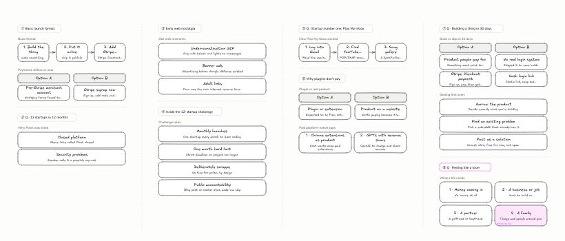

Real podcast test
Method. The public transcript was pasted into ThreadMap's Replay a transcript mode and played through the exact live pipeline at 1.5× speed: transcript log → AI ticks → validated drawing operations → canvas. Every diagram below was decided live by the model; nothing was scripted. The transcript itself is not stored in this repo; only the results are.
Result (run 2, after fixes)

What the model decided, and why
| What was said (paraphrased) | Drawn as | Model's stated reason |
|---|---|---|
| Build a thing, put it online, add Stripe so people can pay | Steps: Build → Online → Stripe | “three actions in a required sequence” |
| Ground rules of the 12-startups-in-12-months challenge | List of 4 rules | “parallel ground rules” |
| How his first startup worked: read Gmail, find YouTube links, show songs | Steps | “each step feeds the next” |
| Nobody pays for browser extensions; they should extend a real product | Comparison: Plugin vs Real product | “two sides set against each other” |
| What to skip when building in 30 days | List | “parallel scope decisions” |
| Finding first users on Reddit without spamming | List | “parallel distribution rules” |
| Long tangent about Flash, Steve Jobs, 90s web GIFs | No diagram (notes only) | Banter, not substance |
It also logged quotes and follow-ups such as “Ask what happens if a customer's login link leaks.”
Run 1 vs run 2
Run 1 exposed two problems, which were fixed before run 2 (same transcript, same model):
| Run 1 | Run 2 | |
|---|---|---|
| Diagrams | 11 | 7 |
| Banter drawn as diagrams | 3 (Flash, old-web, plugin examples) | 0 |
| Placeholder “Option A / Option B” headers | 3 | 0 (real sides named) |
| Sections | 8 | 6 |

Limits of this test
- Latency was 15–35 s per decision because the free model runs through a CLI that starts an agent per call. Hosted fast models answer in a few seconds; this test measures decision quality, not production speed.
- Speech-to-text was not exercised (the transcript was replayed as text). Live Soniox transcription needs a key.
- The 11-case keyword-free eval (
pnpm eval) could not finish: the free models stopped responding after ~40 calls (likely free-tier throttling). It needs one hosted model key to run. - Step boxes truncated long labels (“3. Add Stripe…”) in this run; fixed afterwards (smaller text, three lines, with a regression test).